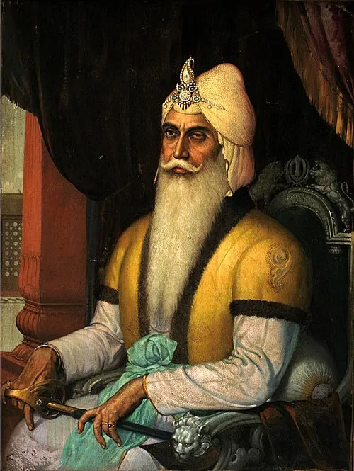

Maharaja Ranjit Singh - Lion of Punjab


Title: Maharaja Ranjit Singh - Lion of Punjab
Category: Religious Corner
Artist: Historical Figure
Year: 1780 – 1839
Category: Religious Corner
Artist: Historical Figure
Year: 1780 – 1839
MAHARAJA RANJIT SINGH - LION OF PUNJAB
By the late 18th century, the territory of Punjab was divided between twelve misls, which were defending their individual zones on payment of a protection tax called Rakhi. This was a makeshift arrangement suited to meet the challenge of foreign invasions. The prominent misl leaders decided that if Punjab was to become one unified entity, other misls would have to be absorbed into the strongest misl. Finally, the Sukerchakia Misl emerged the strongest: on 07 July 1799, its 18-year old chief, Ranjit Singh, entered Lahore, and was formally proclaimed 'Maharaja of Punjab' on 12 April 1801.
Ranjit Singh was born into a humble peasant family on 13 November 1780 at Gujranwala to Maha Singh and Raj Kaur. Maha Singh was a daring and ambitious fighter who brought the Sukerchakia Misl to military pre-eminence. He died when Ranjit was only 12 years old. At a very young age, Ranjit Singh lost his left eye in a small pox attack. He went on to learn the principles of Sikh faith, and developed a fondness for horse riding, hunting, musketry and martial arts.
As the Maharaja of Punjab, Ranjit Singh was an able administrator, unusually strategic in thought and an unquestionable force in the battlefield. He proclaimed himself the servant of Guru Gobind Singh, acting always in the name of the Gurus and for the glory of Khalsa, whether leading the Sikhs against the Afghans, upsetting a Sikh rival, or dealing with the expanding British Empire. The essential element of his military power was maintenance of a strong, well-trained and well-equipped army, consisting of meritorious personnel, irrespective of their religious faith or nationality. He re-organised the Khalsa Army, and set high performance standards in training, deployment, manoeuvre and logistics. He also ensured that the Army was self-sufficient in the manufacturing of weapons, equipment and ammunitions, for which he set up many raw material mines, cannon foundries, gunpowder and arm factories.
With Lahore as its capital, Maharaja Ranjit Singh's empire extended far and wide. Its Northern boundary stretched beyond Attock, the North-Eastern periphery was contiguous with Tibet, which included Kashmir and Ladakh, and the Southern extremity bordered with the provinces of Sindh and Rajputana. The North-Western boundary of the kingdom stretched beyond Peshawar, to the very mouth of the Khyber Pass.
His enduring legacy also includes a period of Sikh cultural and artistic renaissance, the re-building of Harmandir Sahib and other major Gurudwaras such as Takht Sri Patna Sahib and Hazur Sahib in Nanded. His deep imprint is also reflected in the egalitarian, unbiased and secular character of the Punjabi society today - he once told a minister, "God intended me to look upon all religions with one eye; that is why he took away light from the other."
In 2020, Maharaja Ranjit Singh was named as the 'Greatest Leader of All Time' by the BBC World Histories Magazine. Praising his leadership qualities, the publication highlighted how he continues to inspire people around the world in the 21st century - "at a time of global tensions, it's telling that Ranjit Singh's rule is interpreted as representing ideals of tolerance, freedom and cooperation."
By the late 18th century, the territory of Punjab was divided between twelve misls, which were defending their individual zones on payment of a protection tax called Rakhi. This was a makeshift arrangement suited to meet the challenge of foreign invasions. The prominent misl leaders decided that if Punjab was to become one unified entity, other misls would have to be absorbed into the strongest misl. Finally, the Sukerchakia Misl emerged the strongest: on 07 July 1799, its 18-year old chief, Ranjit Singh, entered Lahore, and was formally proclaimed 'Maharaja of Punjab' on 12 April 1801.
Ranjit Singh was born into a humble peasant family on 13 November 1780 at Gujranwala to Maha Singh and Raj Kaur. Maha Singh was a daring and ambitious fighter who brought the Sukerchakia Misl to military pre-eminence. He died when Ranjit was only 12 years old. At a very young age, Ranjit Singh lost his left eye in a small pox attack. He went on to learn the principles of Sikh faith, and developed a fondness for horse riding, hunting, musketry and martial arts.
As the Maharaja of Punjab, Ranjit Singh was an able administrator, unusually strategic in thought and an unquestionable force in the battlefield. He proclaimed himself the servant of Guru Gobind Singh, acting always in the name of the Gurus and for the glory of Khalsa, whether leading the Sikhs against the Afghans, upsetting a Sikh rival, or dealing with the expanding British Empire. The essential element of his military power was maintenance of a strong, well-trained and well-equipped army, consisting of meritorious personnel, irrespective of their religious faith or nationality. He re-organised the Khalsa Army, and set high performance standards in training, deployment, manoeuvre and logistics. He also ensured that the Army was self-sufficient in the manufacturing of weapons, equipment and ammunitions, for which he set up many raw material mines, cannon foundries, gunpowder and arm factories.
With Lahore as its capital, Maharaja Ranjit Singh's empire extended far and wide. Its Northern boundary stretched beyond Attock, the North-Eastern periphery was contiguous with Tibet, which included Kashmir and Ladakh, and the Southern extremity bordered with the provinces of Sindh and Rajputana. The North-Western boundary of the kingdom stretched beyond Peshawar, to the very mouth of the Khyber Pass.
His enduring legacy also includes a period of Sikh cultural and artistic renaissance, the re-building of Harmandir Sahib and other major Gurudwaras such as Takht Sri Patna Sahib and Hazur Sahib in Nanded. His deep imprint is also reflected in the egalitarian, unbiased and secular character of the Punjabi society today - he once told a minister, "God intended me to look upon all religions with one eye; that is why he took away light from the other."
In 2020, Maharaja Ranjit Singh was named as the 'Greatest Leader of All Time' by the BBC World Histories Magazine. Praising his leadership qualities, the publication highlighted how he continues to inspire people around the world in the 21st century - "at a time of global tensions, it's telling that Ranjit Singh's rule is interpreted as representing ideals of tolerance, freedom and cooperation."
🇬🇧 English
🇮🇳 हिन्दी
ੴ ਪੰਜਾਬੀ
Open on Mobile
Scan this QR code to view and switch between English, Hindi, or Punjabi on your phone.